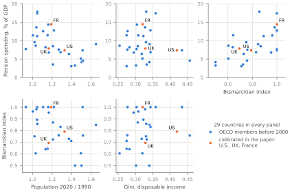

D1. The OECD cross-section
Figure 1.1 of the paper sets pension spending and the Bismarckian–Beveridgean index of the OECD countries against their population growth and their income inequality. The tabs below the figure give the values behind each marker with the year each refers to, the provider, dataset and series of every column with the date it was retrieved, and the pairwise correlations the paper’s introduction describes.
\(\cdot\)

Source
Reads:
data/oecdFigure1.csv
Built by oecdFigure1.figure (python/paper) at commit ea52b8e. Rebuild: .venv\Scripts\python.exe python\paper\build.py --only OECDdata, then build.py --site.
\(\cdot\)
| Country | Pension spending, % of GDP | Year | Population 2020 / 1990 | Bismarckian–Beveridgean index | Gini, disposable income | Year |
|---|---|---|---|---|---|---|
| Australia | 4.2 | 2020 | 1.503 | 0.499 | 0.340 | 2020 |
| Austria | 14.3 | 2020 | 1.161 | 1.000 | 0.304 | 2020 |
| Belgium | 11.5 | 2020 | 1.155 | 0.643 | 0.274 | 2020 |
| Canada | 6.4 | 2020 | 1.373 | 0.729 | 0.318 | 2020 |
| Czech Republic | 8.6 | 2020 | 1.033 | 0.603 | 0.254 | 2020 |
| Denmark | 8.2 | 2020 | 1.133 | 0.639 | 0.283 | 2020 |
| Finland | 12.6 | 2020 | 1.109 | 1.000 | 0.277 | 2020 |
| France | 14.4 | 2020 | 1.192 | 1.000 | 0.321 | 2020 |
| Germany | 11.2 | 2020 | 1.047 | 0.892 | 0.323 | 2020 |
| Greece | 17.9 | 2020 | 1.049 | 0.857 | 0.331 | 2020 |
| Hungary | 7.7 | 2020 | 0.932 | 1.000 | 0.303 | 2020 |
| Iceland | 3.0 | 2020 | 1.398 | 0.711 | 0.275 | 2020 |
| Ireland | 3.3 | 2020 | 1.435 | 0.500 | 0.302 | 2020 |
| Italy | 17.4 | 2020 | 1.048 | 1.000 | 0.358 | 2020 |
| Japan | 9.6 | 2020 | 1.020 | 0.750 | 0.330 | 2020 |
| Korea | 3.5 | 2020 | 1.209 | 0.724 | 0.333 | 2020 |
| Luxembourg | 9.0 | 2020 | 1.651 | 0.847 | 0.341 | 2020 |
| Mexico | 4.6 | 2020 | 1.517 | 0.756 | 0.456 | 2020 |
| Netherlands | 6.8 | 2020 | 1.167 | 0.954 | 0.295 | 2020 |
| New Zealand | 5.1 | 2020 | 1.496 | 0.604 | 0.320 | 2020 |
| Norway | 7.6 | 2020 | 1.268 | 0.759 | 0.277 | 2020 |
| Poland | 11.4 | 2020 | 1.004 | 0.962 | 0.308 | 2020 |
| Portugal | 13.6 | 2020 | 1.040 | 0.982 | 0.328 | 2020 |
| Spain | 12.8 | 2020 | 1.218 | 1.000 | 0.343 | 2020 |
| Sweden | 8.5 | 2020 | 1.210 | 0.868 | 0.307 | 2020 |
| Switzerland | 6.9 | 2020 | 1.287 | 0.831 | 0.343 | 2020 |
| Turkey | 7.4 | 2020 | 1.513 | 1.000 | 0.434 | 2020 |
| United Kingdom | 7.8 | 2020 | 1.166 | 0.694 | 0.329 | 2020 |
| United States | 7.4 | 2020 | 1.328 | 0.790 | 0.419 | 2020 |
Source
Reads:
data/oecdFigure1.csv
Built by tablesOA.oecdCountries (python/paper) at commit ea52b8e. Rebuild: .venv\Scripts\python.exe python\paper\build.py --only OECD_Countries, then build.py --site.
\(\cdot\)
| Columns | Source | Series and years | Note |
|---|---|---|---|
| Plotted in the figure of the paper | |||
| pensionSpending | OECD: Social Expenditure Database, OECD.ELS.SPD:DSD_SOCX_AGG@DF_SOCX_AGG(1.0); Data Explorer; retrieved 2026-09-30 | public (ES10), old age and survivors (TP01), in cash (C), % of GDP. Years: 2020 (29 of 29) | The OECD’s ’pension spending’: cash expenditure on old-age and survivors pensions (Pensions at a Glance measure PEP to its rounding). |
| pop1990_oecd, pop2020_oecd, popGrowth | OECD: Historical population data, OECD.ELS.SAE:DSD_POPULATION@DF_POP_HIST(1.0); Data Explorer; retrieved 2026-09-30 | POP, persons, both sexes, all ages, historical; popGrowth = pop2020/pop1990. Years: 1990 and 2020 (29 of 29) | France: the series adds the overseas departments from 1991, so its ratio (1.192) is not on a constant territory (World Bank 1.160). |
| bbIndex | derived: Pensions at a Glance 2021, table 4.1 | grr100_men / grr050_men. Years: 2020 (29 of 29) | Men: the table headline and the concept of section 6. |
| gini, gini_year, gini_wiidId, gini_source | UNU-WIDER: World Income Inequality Database (WIID), version 8 September 2026, doi 10.35188/UNU-WIDER/WIID-080926; version 8 Sep 2026; retrieved 2026-09-30 | the observation WIID flags for its Companion (wiidcompanion = Yes): disposable income, persons, per capita except where gini_source says otherwise; 0-1 scale. Years: 2020 (29 of 29) | gini_wiidId is the WIID row id. |
| Further concepts in data/oecdFigure1.csv | |||
| pensionSpending_cashInKind | OECD: Social Expenditure Database, OECD.ELS.SPD:DSD_SOCX_AGG@DF_SOCX_AGG(1.0); Data Explorer; retrieved 2026-09-30 | as pensionSpending, cash plus in kind (_T). Years: 2020 (29 of 29) | The in-kind part is services to the elderly (care, home help), largest in NOR 2.57, SWE 2.43, DNK 1.87, FIN 1.61. |
| pop1990_wb, pop2020_wb, popGrowth_wb | World Bank: World Development Indicators; API lastupdated 2026-07-13; retrieved 2026-09-30 | SP.POP.TOTL; popGrowth_wb = pop2020/pop1990. Years: 1990 and 2020 (29 of 29) | – |
| grr050_men, grr100_men, grr050_women, grr100_women | OECD: Pensions at a Glance 2021, table 4.1; StatLink xlsx “Version 1 - Last updated: 08-Dec-2021”; retrieved 2026-09-30 | gross pension replacement rate at 0.5 and 1.0 times average earnings, mandatory schemes, % of individual earnings, one decimal as published; women = men where the table gives none. Years: pension rules in 2020 (29 of 29) | The OECD Data Explorer dataflows DSD_PAG@DF_PRR and DSD_PAG@DF_PAG now hold only 2024 (Pensions at a Glance 2025); the publication StatLink still serves the 2020 vintage. |
| bbIndex_women | derived: Pensions at a Glance 2021, table 4.1 | grr100_women / grr050_women. Years: 2020 (29 of 29) | – |
| bbIndex_mean | derived: Pensions at a Glance 2021, table 4.1 | (bbIndex + bbIndex_women) / 2. Years: 2020 (29 of 29) | – |
| gini_wiidMarket, gini_wiidMarket_year | UNU-WIDER: WIID, version 8 September 2026; version 8 Sep 2026; retrieved 2026-09-30 | source OECD.Stat (Income Distribution Database), market income, square-root scale, persons; 0-1 scale. Years: 2020 (22 of 29); 2018: JPN; 2019: DNK, FRA, DEU, CHE, TUR; none in 2018-2022: ISL | Before taxes and transfers; retirees without market income count at zero. |
| gini_widPretax, gini_widPretax_year | World Inequality Lab: World Inequality Database (WID), bulk download; Last-Modified Wed, 09 Sep 2026 14:06:24 GMT; retrieved 2026-09-30 | gptincj992, p0p100: Gini of pre-tax national income, equal-split adults (20+). Years: 2020 (29 of 29) | – |
Note: The columns are those of data/oecdFigure1.csv; data/oecdFigure1_sources.csv carries the URL of every source.
Source
Reads:
data/oecdFigure1_sources.csv
Built by tablesOA.oecdSources (python/paper) at commit ea52b8e. Rebuild: .venv\Scripts\python.exe python\paper\build.py --only OECD_Sources, then build.py --site.
\(\cdot\)
| Variables | \(n\) | Pearson \(r\) | \(p\) | Spearman | \(p\) |
|---|---|---|---|---|---|
| Pension spending, % of GDP and Population 2020 / 1990 | 29 | −0.58 | 0.001 | −0.62 | <0.001 |
| Pension spending, % of GDP and Bismarckian–Beveridgean index | 29 | 0.63 | <0.001 | 0.60 | 0.001 |
| Pension spending, % of GDP and Gini, disposable income | 29 | −0.08 | 0.681 | 0.00 | 0.992 |
| Population 2020 / 1990 and Bismarckian–Beveridgean index | 29 | −0.39 | 0.039 | −0.30 | 0.112 |
| Population 2020 / 1990 and Gini, disposable income | 29 | 0.43 | 0.020 | 0.34 | 0.068 |
| Bismarckian–Beveridgean index and Gini, disposable income | 29 | 0.18 | 0.346 | 0.23 | 0.231 |
Source
Reads:
results/paper/oecdCorrelations.csv
Built by tablesOA.oecdCorrelations (python/paper) at commit ea52b8e. Rebuild: .venv\Scripts\python.exe python\paper\build.py --only OECD_Correlations, then build.py --site.